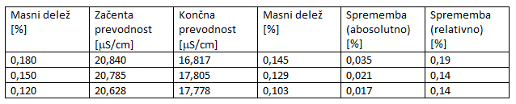
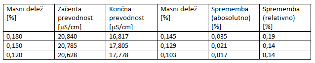

| Uvod | Teorija | Eksperiment | Rezultati | Zaključek | Povezave |
|---|
Po 3 tednih dela smo ugotovili sledeče: prevodnost je odvisna od koncentracije topljenca, temperature raztopine in pa od topljenca samega (t.j. kakšna sol oz. elektrolit se tvori). Naš prvi neuspeli poskus zmrzovanja s tekočim dušikom je prinesel dokaj zanimive rezultate - zviševanja prevodnosti zamrznjene (potem staljene) vode.

Po temu presenetljivemu opažanju smo se odločili, da bomo celoten poskus opravili pri bolj naravnih pogojih in vse zamrzovanje preselili v zamrzovalnik. V zamrzovalniku smo vzorce raztopin pustili pri vsaki fazi za nekonstanten čas in opažali kako voda zmrzuje in koliko ledu nastane v določenem času. Rezultati po opravljenem poskusu so bili manj zanimivi od prvega, vendar bolj v liniji naših pričakovanj. Spodnji grafi prikazujejo prevodnost in s tem kako masni delež soli (W) pada po vsaki fazi hladne destilacije.

 ( točka 1 na abscisni osi prikazuje začetno prevodnost in vsaka naslednja cela številka n prikazuje (n-1)-to fazo )
( točka 1 na abscisni osi prikazuje začetno prevodnost in vsaka naslednja cela številka n prikazuje (n-1)-to fazo )
Ker smo se s prevodnostjo srečali prvič, smo imeli nekaj težav z meritvami prevodnosti, saj je prevodnost vrednost, ki je odvisna od temperature raztopine, naš konduktometer pa nam je to kompenziral. Zato smo morali po narobe opravljenih meritvah korigirati meritve tako, da smo izmerili prevodnost iste raztopine pri večih temperaturah in pri eni konstantni in naredili umeritveno krivuljo, ki zgleda približno takole.

Naredili smo tudi umeritveno krivuljo, ki prikazuje prevodnost v odvisnosti od W(NaCl) za naš konduktometer. Ker so vse številke vezane na predpostavko, da je naša kompenzacija z umeritvenimi krivuljami pravilna, so naši končni rezultati lahko le relativni, ob upoštevanju prave kompenzacije.
 Rezultati:

Rezultati:
